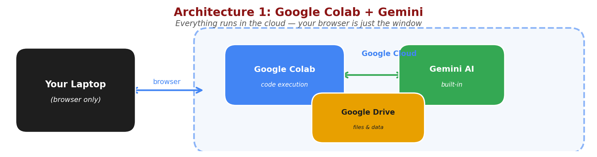
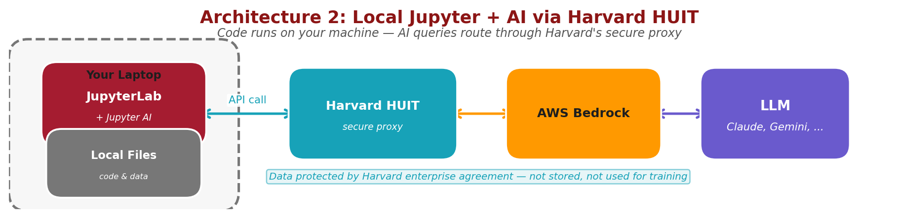
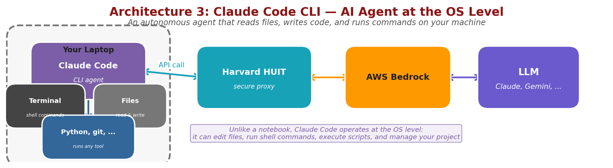

Generative AI for Scholarship
Harvard Data Science Initiative (HDSI) & Faculty of Arts and Sciences (FAS)
Friday, February 27, 2026 · 4:00–5:30 pm · Northwest Building, Room B103
This session focuses on using AI for interactive data analysis with Python notebooks — the kind of exploratory, iterative work that researchers do every day: loading data, writing analysis code, making plots, and debugging along the way.
This session covers two different ways to use AI while writing Python code. Understanding the architecture helps you choose the right tool for the job.

In Exercise 1, your browser connects to Google Colab, which runs your code on Google's servers. Gemini AI is built in — everything happens in the cloud. Your laptop is just the display. Colab with Gemini is free through your Harvard Google account.

In Exercise 2, JupyterLab runs on your own machine, so your code and data stay local. When you ask the AI for help, the query goes through Harvard's secure HUIT proxy to an LLM (Claude, Gemini, or others) via AWS Bedrock, and the response comes back the same way. The same HUIT API key works for all models available through Bedrock. Your data is protected by Harvard's enterprise agreement. API calls through HUIT are not free — they are billed to your PI's HUIT account, so coordinate with your advisor.
Before the session, please ensure you have:
Follow these steps to get the demonstration notebooks ready:
How to download: Control-click (Mac) or right-click (Windows) each button and select "Download Linked File" or "Save Link As..."
Notebook 1: AI in Colab
Notebook 2: CSV Data
Notebook 3: Google Drive
testimage.png
testimage.png to the top level of your Google Drive (My Drive — not inside a subfolder)This session covers two ways to integrate AI with Python programming:
Google Colab has built-in Gemini integration, allowing you to get AI assistance while writing code. Three notebooks walk you through progressively:
!pip installtestimage.png), and displaying itWhile Colab is convenient, many researchers prefer running Jupyter notebooks locally on their laptops for better control, offline access, and integration with local files. You can set up an AI chat assistant (Jupyternaut) directly inside JupyterLab, powered by Claude through Harvard's HUIT Bedrock proxy.
Mac Setup Guide
Windows Setup Guide
Step-by-step instructions for configuring Jupyter AI with Harvard's API endpoint
Quick summary of what's needed:
python3 -m venv ~/jupyter-ai-env (keeps beta packages isolated)pip install "jupyter-ai==3.0.0b9" boto3AWS_BEARER_TOKEN_BEDROCK set to your API keyThe full setup guides (Mac | Windows) cover installation, environment configuration, Jupyternaut settings, available models, and troubleshooting.
Using AI in your local notebook:
import anthropic
import os
# Initialize the client with Harvard endpoint
client = anthropic.AnthropicBedrock(
aws_region="us-east-1" # Not actually used, but required parameter
)
# Ask for help with your code
def get_ai_help(prompt):
message = client.messages.create(
model="us.anthropic.claude-opus-4-5-20251101-v1:0",
max_tokens=1024,
messages=[{"role": "user", "content": prompt}]
)
return message.content[0].text
# Example: Ask AI to help debug
code_with_error = """
def calculate_mean(data):
return sum(data) / length(data) # Error: should be len()
"""
help_text = get_ai_help(f"Fix this Python code:\n{code_with_error}")
print(help_text)Advantages of local notebooks with AI:
Using Harvard's API endpoint charges costs to your PI's HUIT billing account. Make sure you set monthly spending limits when registering your API key. Monitor usage regularly and coordinate with your advisor about appropriate resource usage.

Next week, we'll explore Claude Code, a command-line AI agent that operates at the operating system level — not inside a notebook. It can read and write files anywhere on your machine, run shell commands, execute Python scripts, use git, and manage entire projects autonomously. Like the local Jupyter setup, it routes AI queries through Harvard's secure HUIT proxy.
Claude Code represents a more autonomous approach to AI-assisted programming — you describe what you want to accomplish, and it plans and executes the entire workflow.
No setup required before Session 3 — we'll walk through installation together during that session.
Please take a moment to share your feedback — it helps us improve future sessions.
{kind=link}